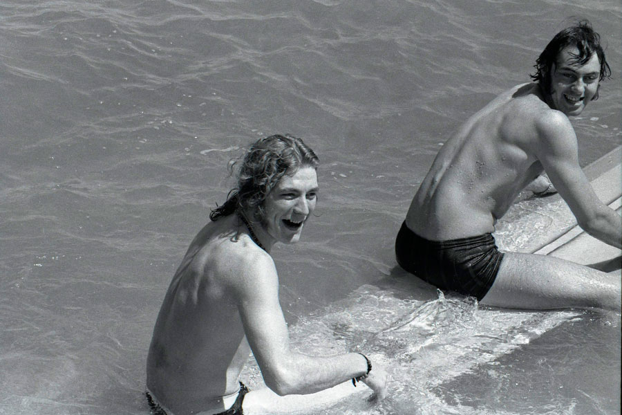

This are some awesome Led Zeppelin facts
-
A is for ABBA
-
You wouldn’t have thought there’s much connecting prog-rock deviants Led Zeppelin to sugary Scandi pop crew ABBA, but here’s one: Zep recorded tracks for their ‘In Through The Out Door’ album in the ABBA’s Polar Studios. Legend has it ABBA’s Benny and
Bjorn took Robert Plant on a night out to a nearby sex club after meeting at the Stockholm recording facility.
-
B is for black magic
- Jimmy Page famously dabbled in dark arts, and even owned an occult bookshop and publishing house, The Equinox Booksellers and Publishers on London’s Kensington High Street, prior to success with Zeppelin. The four symbols on the sleeve
of the band’s fourth album were thought to be Satanic symbols.
-
C is for contract Kings
- Each member of the group had a formidable reputation as session musicians before teaming up to form Zeppelin. As a result, when it came to signing their first album deal with Atlantic, they were able to wrangle an unprecedented $20,000
advance as well as almost full publishing rights to their music.
-
D is for debauchery
- Zeppelin’s partying is a thing of legend. Case in point – ever heard the story of how they once rented six floors of the Andaz West Hollywood Hotel in LA for their entourage and friends, hosting a drug-fuelled orgy while drummer John Bonham
rode a motorbike down hotel corridors?
-
E is for effects
- Zeppelin pioneered some pretty huge sonic breakthroughs. The reverse echo Jimmy Page often used, as heard on ‘Whole Lotta Love’, for instance, was pretty revolutionary in its time. Of course, Page downplayed the whole thing: “I’d was just
in the studio twisting nobs,” he once told Rolling Stone.
-
F is for flying in style
- By 1973, Zeppelin had their own custom plane, the Starship. It had a bar with a keyboard organ built in, a video library and shower room, and cost $30,000 to lease. Deep Purple, the Rolling Stones and Peter Frampton all also flew in the
airship.
-
G is for guitars

- Guitars plural. One axe was apparently not enough for Jimmy Page, who was a famous early adopter of Gibson’s double-necked guitar. His Gibson EDS-1275 was named the coolest guitar in rock in a 2012 poll. No arguments here.
-
H is for hidden messages
- One of rock’s greatest myths: according to televangelist Paul Crouch in 1982, if you play the “bustle in your hedgerow” segment of Zep’s ‘Stairway To Heaven’ backwards you can hear subliminal Satanic messages. “You’ve got to have a lot
of time on your hands to even consider that people would do that,” responded Robert Plant.
-
I is for impostors
- Robert Plant revealed to the Guardian in 2012 he once posed as a NME journalist to blag his way into a festival in Marrakech. “I said I was working for the NME. And I could get right to the front with my recorder, and there were a lot
of Berber rhythms that were spectacular,” he explained. You’re welcome here on work experience any time you like, Rob.
-
J is for Jimi Hendrix

- Hendrix didn’t like Led Zeppelin, according to a former band mate of his, claiming the band “stole” from other groups. He was, however, a huge fan of John Bonham – and is said to have tried to snag the drummer for his own band on a number
of occasions, even if it meant having two drummers in his live set up.
-
K is for Keith Moon
- The Who man is famously said to have given Zep their name. In May 1966, Moon and Who bassist John Entwistle recorded the instrumental “Beck’s Bolero” with Page, John Paul Jones and Jeff¬ Beck. The track came out well, and they tossed around
the idea of forming a new band. Moon allegedly said the band would go over like a lead balloon – thus “Led Zeppelin”.
-
L is for Lord of the Rings
- You won’t find many bigger Tolkien nuts than Zeppelin, whose ‘The Battle of Evermore’, ‘Ramblin’ On’ (featuring references to Gollum and Mordor) and ‘Carouselambra’ all were odes to Lord of the Rings.
Read full article